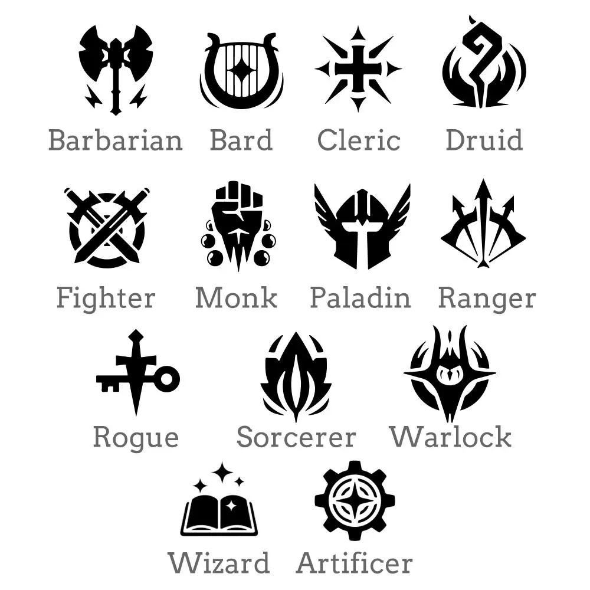

Why I Built My D&D Character Creator
Published: November 23, 2023
One question I was asked at the start of the semester is, “Why did you create a Dungeons & Dragons character creator when a pen and paper work just fine?” Well, this post is my answer. Building this tool wasn’t just about a coding exercise, it was about creating a system to allow players to jump into their game without needing to do all of the complex calculations themselves.
The Problem I Wanted to Solve
If you’ve ever filled out a manual D&D character sheet, you know how easy it is to make mistakes. Numbers can get mixed up, and the rules feel overwhelming for newcomers, and stats can be overwhelming to allocate at the start. I wanted to build something that takes the guesswork out: an easy-to-use interface that automatically does the calculations and guides players through every step, including stats, class, background, and even item usage. This way, even beginners can jump right in without having to spend hours reading the D&D user manual.
What I Learned Along the Way
One big lesson was realizing what “intuitive” means isn’t always obvious. When I tested the tool with others, their feedback showed me where I needed to simplify or clarify. As someone who does know the rules for D&D, I found people going in blind tended to struggle in area I would never ahve thought of, leading to new features I never planned like automatic stat allocation based on class and a page for analyzing starter items for each background. It turns out iteration and user testing are just as, if not more important than writing the code itself.
Want to Try It Yourself?
Curious to see how it works? You can explore the full project on GitHub. Or try the hosted version linked on my website and start building your own D&D characters with ease.